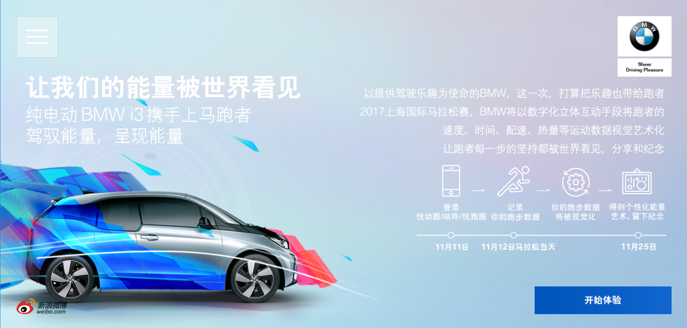
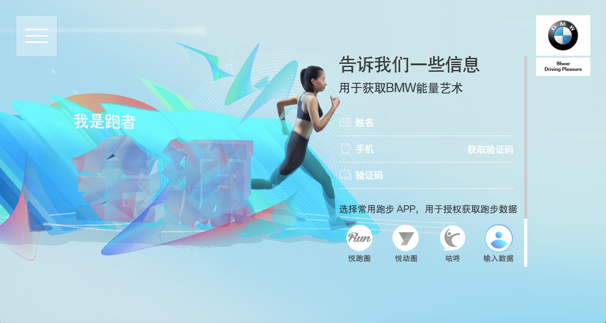

Introduction Page with Steps Breakdown Guidance
User Log in Interface
User Running Goal Share Interface
BMW Energy Art H5 Campaign
Client // BMW, Wieden+Kennedy
Role // User Experience Design
Tool // Axure
BMW Energy Art Campaign is a 3D generative data art project for Shanghai Marathon 2017 in collaboration with Joshua Davis.
The goal of this campaign is to align the brand of BMW with sports and encourage sharing among runners. We have collaborated with running APPs to retrieve runner's data. We tried to simplify the registration process and highlight the fun experience to interact with their own piece. After viewing the data art, users were asked to share the screen capture with an automatically embedded QR code. By scanning it, friends from social media can visit the campaign for secondary transmission.
Home
Prev
| Next